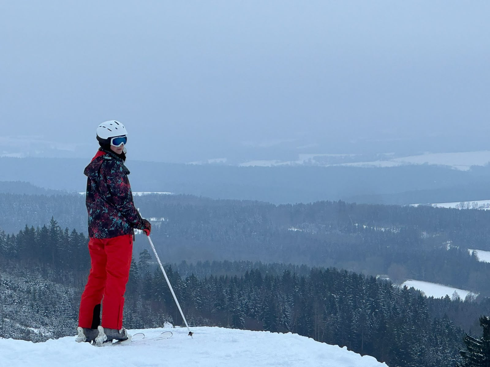
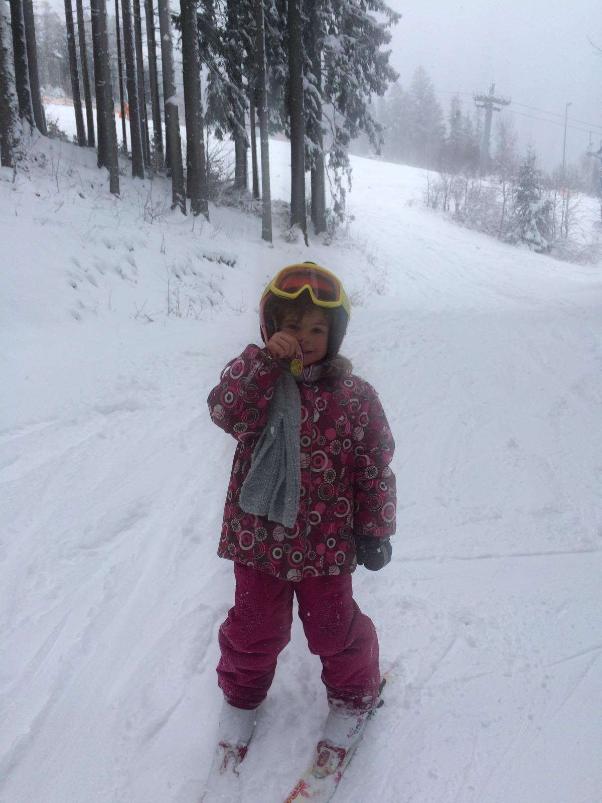
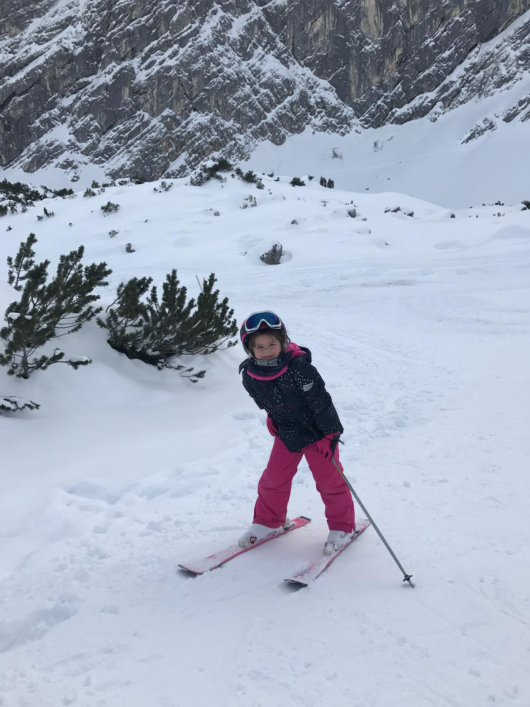

Wie ich zum Skifahren gekommen bin
Skifahren gehört für mich schon seit meiner Kindheit dazu. Ich war früher oft mit meiner Familie im Skiurlaub und konnte dadurch viele Erfahrungen auf der Piste sammeln. Mit der Zeit habe ich immer mehr dazugelernt und meine Fähigkeiten verbessert.
Ich habe auch Skikurse besucht, in denen ich die Grundlagen gelernt und meine Technik weiterentwickelt habe. Außerdem war ich bei einem Skilager. Das war eine besondere Erfahrung, weil man mehrere Tage gemeinsam unterwegs ist und viel Zeit auf der Piste verbringt.
Meine Ski-Erinnerungen in Bildern
Die sechs Fotos zeigen verschiedene Erinnerungen aus meiner Zeit auf Skiern – auch Bilder aus meiner Kindheit.



Wo ich Ski gefahren bin
- In Österreich bei gemeinsamen Skiurlauben
- Bei Skikursen, um meine Technik zu lernen und zu verbessern
- Beim Skilager mit vielen gemeinsamen Erlebnissen
- Am Skilift Werda
- Mit meiner Familie bei verschiedenen Skiausflügen
Was mir am Skifahren gefällt
| Erlebnis | Was ich daran mag |
|---|---|
| Mit der Familie fahren | Gemeinsame Zeit und schöne Erinnerungen |
| Skikurse | Neue Dinge lernen und sicherer werden |
| Skilager | Zusammen mit anderen eine besondere Zeit erleben |
| Österreich | Neue Pisten und Ski-Gebiete kennenlernen |
Mein Fazit
Skifahren ist für mich mehr als nur ein Sport. Ich verbinde damit viele Erinnerungen aus meiner Kindheit, Skiurlaube mit meiner Familie und Erlebnisse aus Skikursen und dem Skilager. Besonders schön finde ich, dass ich dabei Zeit draußen verbringen und immer wieder neue Pisten entdecken kann.